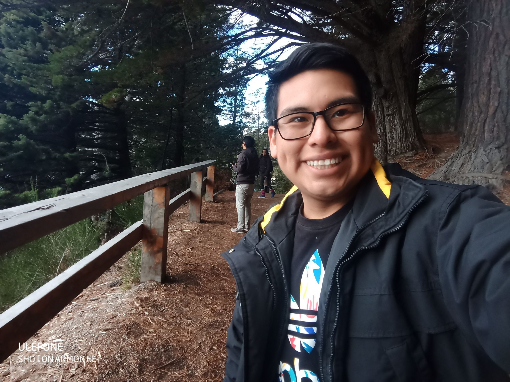

Sobre Mí
Ingeniero Electtrónico
Fiel creyente de la tecnología para la optimizacion
Soy ingeniero de la Universidad de Ingeniería y Tecnología-UTEC. Durante la universidad, me centraría mucho en la investigación de robótica aplicada presentando en conferencias nacionales e internacionales.

Experiencia

Tecnología Minera
Conocimiento de la plataforma Minestar-CAT

Mantenimiento Eléctrico
Conocimiento de Palas eléctricas, perforadoras y camiones mineros.

Mejora de Procesos
Aplicación de metodología Lean.

Inteligencia Artificial
Aplicación de los algoritmos para incremento de indicadores.